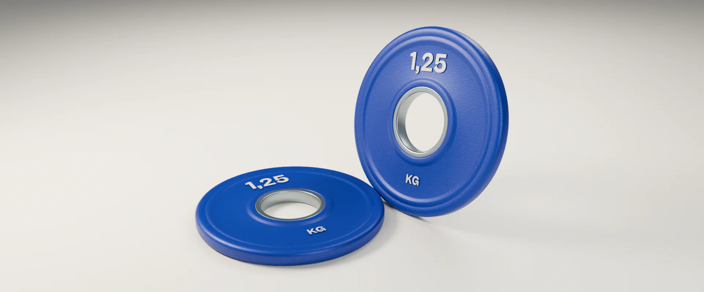
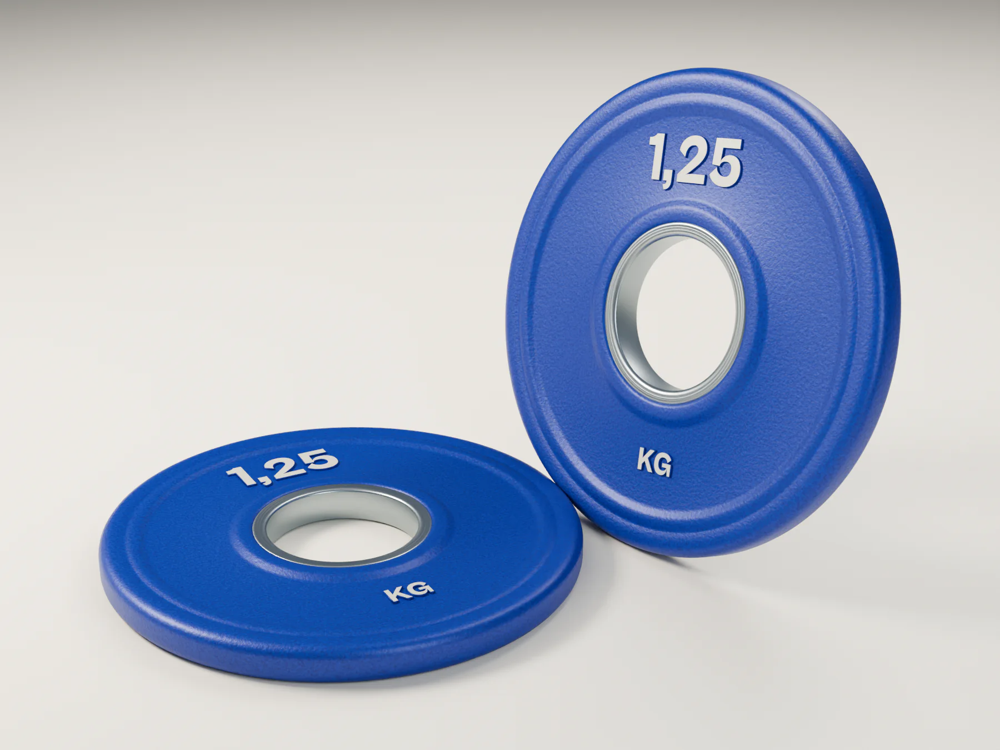
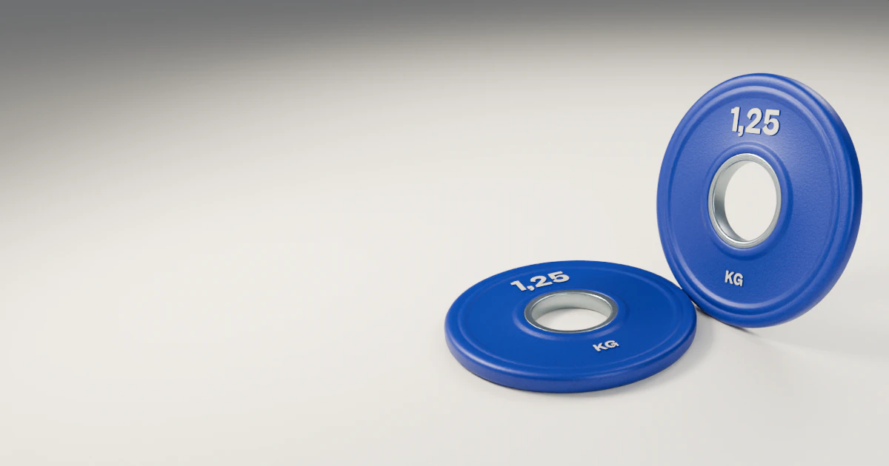

<!doctype html>
<html lang="da">
<head>
  <meta charset="utf-8">
  <title>Træningsmester — Træn videre fra sidste gang.</title>
  <style>
    @font-face { font-family:Cabinet; src:url('../../public/fonts/CabinetGrotesk-800.woff2'); font-weight:800 }
    @font-face { font-family:Satoshi; src:url('../../public/fonts/Satoshi-500.woff2'); font-weight:500 }
    @font-face { font-family:Satoshi; src:url('../../public/fonts/Satoshi-700.woff2'); font-weight:700 }
    :root { --paper:#f5f2e9; --ink:#181c1a; --muted:#525953; --line:#afb3a8; --blue:#0759c7 }
    * { box-sizing:border-box }
    body { margin:0; color:var(--ink); background:var(--paper); font:500 34px/1.24 Satoshi,Arial,sans-serif }
    h1,p,dl,dd,dt { margin:0 }
    #canvas { position:relative; isolation:isolate; width:1080px; height:1920px; overflow:hidden; background:var(--paper) }
    .brand { position:absolute; left:68px; top:80px; z-index:3; display:flex; gap:16px; align-items:center }
    .brand img { width:54px; height:54px; object-fit:contain }
    .brand span { font:800 44px/.96 Cabinet,Arial,sans-serif; letter-spacing:-.05em }
    h1 { position:absolute; left:61px; top:209px; z-index:2; font:800 143px/.88 Cabinet,Arial,sans-serif; letter-spacing:-.06em }
    h1 span { display:block; white-space:nowrap }
    .study,.moving-motif,.screen,.scene-for-copy { position:absolute; display:block }
    .study,.moving-motif,.scene-for-copy { object-fit:cover }
    .screen { z-index:1; height:auto; filter:drop-shadow(0 8px 16px rgb(24 29 25 / 12%)) }
    .note,.address,.status,.storyline,.ledger,.metric,.cta { position:absolute }
    .note,.status { color:var(--muted) }
    .note { left:70px; bottom:65px; font-size:26px }
    .metric { left:70px; right:70px; bottom:143px; border-top:2px solid var(--line); padding-top:22px }
    .metric dt,.ledger dt { font:700 33px/1.1 Satoshi,Arial,sans-serif; letter-spacing:-.025em }
    .metric dd,.ledger dd { margin-top:9px; font:800 83px/.96 Cabinet,Arial,sans-serif; letter-spacing:-.055em; font-variant-numeric:tabular-nums }
    .metric small,.ledger small { font:700 .43em/1 Satoshi,Arial,sans-serif; letter-spacing:-.035em }
    .ledger { display:grid; grid-template-columns:1fr 1fr; column-gap:32px }
    .ledger div + div { border-left:2px solid var(--line); padding-left:33px; color:var(--blue) }
    .ledger dd { white-space:nowrap }
    .cta { display:flex; align-items:center; gap:18px; color:var(--blue); font:700 49px/1.04 Satoshi,Arial,sans-serif; letter-spacing:-.045em }
    .arrow { width:.65em; height:.65em; flex-shrink:0 }
    .address { font-weight:700; letter-spacing:-.025em }
    .intro h1 { top:214px; font-size:154px }
    .intro .moving-motif { top:565px; left:0; width:1080px; height:810px }
    .intro .metric { top:1493px; bottom:auto; border:0; padding:0 }
    .intro .metric dd { font-size:119px }
    .chapter h1 { font-size:127px }
    .chapter .screen { top:479px; left:81px; width:845px }
    .program .screen { left:100px }
    .set h1 { top:209px; font-size:136px }
    .set .screen { left:78px; top:572px; width:923px }
    .set .storyline { top:387px; left:70px; font-size:43px }
    .set .metric dd,.history .metric dd { color:var(--blue) }
    #canvas.rest { background:#202623; color:#f7f4ed }
    .rest .note { color:#d5d8cf }
    .rest h1 { top:212px }
    .rest .rest-time { position:absolute; left:58px; top:519px; font:800 239px/.9 Cabinet,Arial,sans-serif; letter-spacing:-.067em; font-variant-numeric:tabular-nums }
    .rest .screen { left:74px; top:818px; width:932px; height:580px; object-fit:cover; object-position:50% 82% }
    .rest .metric { border-color:#69736b }
    .rest .metric dd { font-size:76px }
    .history .screen { left:103px; top:573px; width:870px }
    .outro h1 { font-size:142px }
    .outro .study { width:1080px; height:580px; left:0; top:555px }
    .outro .ledger { left:70px; top:1205px; right:72px }
    .outro .ledger dd { font-size:94px }
    .outro .cta { top:1480px; left:68px; right:68px; padding-top:36px; border-top:2px solid var(--line); font-size:63px }
    .outro .address { top:1618px; left:70px; font-size:43px }
    .outro .status { top:1717px; left:70px; font-size:34px }
    #canvas.still { height:1350px }
    .still .brand { top:51px }
    .still h1 { top:160px; font-size:133px }
    .still .study { top:436px; left:0; width:1080px; height:495px }
    .still .ledger { left:68px; right:68px; top:981px }
    .still .ledger dd { font-size:86px }
    .still .ledger dt { font-size:29px }
    .still .cta { left:68px; top:1171px; right:68px; border-top:2px solid var(--line); padding-top:23px; font-size:46px }
    .still .address { right:68px; top:1210px; font-size:29px }
    .still .note { bottom:53px; font-size:24px }
    #canvas.og { width:1200px; height:630px }
    .og .scene-for-copy { inset:0; width:1200px; height:630px }
    .og .brand { top:46px; left:48px; gap:10px }
    .og .brand img { width:43px; height:43px }
    .og .brand span { font-size:31px }
    .og h1 { left:43px; top:158px; font-size:86px }
    .og .ledger { top:355px; left:49px; width:492px; column-gap:14px }
    .og .ledger div+div { padding-left:20px }
    .og .ledger dt { font-size:19px }
    .og .ledger dd { font-size:51px; margin-top:5px }
    .og .cta { top:514px; left:49px; font-size:34px; gap:13px }
    .og .note { top:574px; bottom:auto; left:50px; font-size:19px }
  </style>
</head>
<body>
  <main id="canvas"></main>
  <script>
    const mode = new URLSearchParams(location.search).get('mode') || 'intro';
    const stage = document.getElementById('canvas');
    const brand = '<div class="brand"><span>Træningsmester</span></div>';
    const headline = (...lines) => '<h1>' + lines.map(line => '<span>' + line + '</span>').join('') + '</h1>';
    const sample = note => '<p class="note">' + note + '</p>';
    const recordNote = sample('Eksempeldata · rekonstruerede appvisninger');
    const study = '';
    const product = (name,alt) => '';
    const metric = (label,amount,unit) => '<dl class="metric"><dt>' + label + '</dt><dd>' + amount + ' <small>' + unit + '</small></dd></dl>';
    const ledger = '<dl class="ledger"><div><dt>Sidste træning</dt><dd>60 <small>kg × 8</small></dd></div><div><dt>Dagens første sæt</dt><dd>62,5 <small>kg × 8</small></dd></div></dl>';
    const cta = '<p class="cta">Få besked om adgang<svg class="arrow" viewBox="0 0 28 28" fill="none" aria-hidden="true"><path d="M4 24 24 4M5 4h19v19" stroke="currentColor" stroke-width="2.8" stroke-linecap="round" stroke-linejoin="round"/></svg></p>';
    const scenes = {
      program: {
        title:['Dit program', 'er klar.'], alt:'Overkrop A. Bænkpres Med Stang.', label:'Overkrop A · Bænkpres med stang', amount:'3', unit:'sæt × 8'
      },
      set: {
        title:['To små skiver.'], alt:'Sidste sæt 60 kg × 8. Første sæt står til 62,5 kg × 8.', label:'Første arbejdssæt', amount:'62,5', unit:'kg × 8',
        message:'<p class="storyline">1,25 kg på hver side af stangen.</p>'
      },
      rest: {
        title:['Hold styr', 'på pausen.'], alt:'Første sæt er registreret. Andet sæt er aktivt, og pausen viser 01:42.', label:'Første sæt er registreret', amount:'62,5', unit:'kg × 8',
        message:'<p class="rest-time">01:42</p>'
      },
      history: {
        title:['Tag det med', 'til næste gang.'], alt:'Tidligere sæt i Bænkpres Med Stang den 15. november, 62,5 kg × 8.', label:'15. november · seneste registrering', amount:'62,5', unit:'kg × 8'
      }
    };
    stage.className = mode;
    const scene = scenes[mode];
    if (scene) {
      stage.classList.add('chapter');
      stage.innerHTML = brand + headline(...scene.title) + (scene.message || '') + product(mode,scene.alt)
        + metric(scene.label,scene.amount,scene.unit) + recordNote;
    } else if (mode === 'intro') {
      stage.innerHTML = brand + headline('Hvad løftede','jeg sidst?')
        + ''
        + metric('Sidste sæt i bænkpres','60','kg × 8') + sample('Eksempeldata');
    } else if (['outro','still','og'].includes(mode)) {
      const picture = mode === 'og' ? '' : study;
      stage.innerHTML = picture + brand + headline('Træn videre','fra sidste gang.') + ledger + cta + sample('Eksempeldata · Bænkpres med stang');
      if (mode !== 'og') stage.insertAdjacentHTML('beforeend','<p class="address">traeningsmester.dk</p>');
      if (mode === 'outro') stage.insertAdjacentHTML('beforeend','<p class="status">Træningsmester er under udvikling.</p>');
    }
  </script>
</body>
</html>
